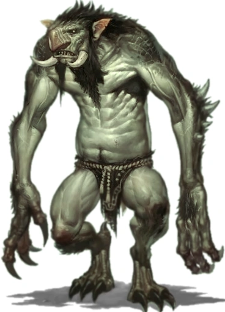

Playable Races > Troll
Physically imposing swamp creatures that originate from the deep jungles of southern Karra. Though they may look like more emaciated Ogres with pointy ears and noses, frog-like skin complexions and sharp piranha fangs, their true origin is unknown. They are usually 8 feet tall and extremely lanky.
They worship the dense and foul tropical rainforests as their “holy land” and defend them with great fury, claiming to descend from a lost prehistoric empire.
Slime Biology: If brought down to 1 hit point while other party members survive and the killing blow was not of Fire, Shadow or Nature/Toxin type, they fall unconscious for a week while their bodies rebuild.
Regeneration: Trolls regenerate 1 point per level of health per six turns in combat, or 4 per level and one of any lost limbs overnight, an amount which doubles in conditions of high moisture.
Racials: +1 STR +1 CON -2 CHA +4 Knowledge (Religion) Judge
Health: 1d9 health points per level.
Origin: Trolls dwell in the deep swamps west of the Stonespine, specifically in Uk'goth, the holy land of the Trolls.